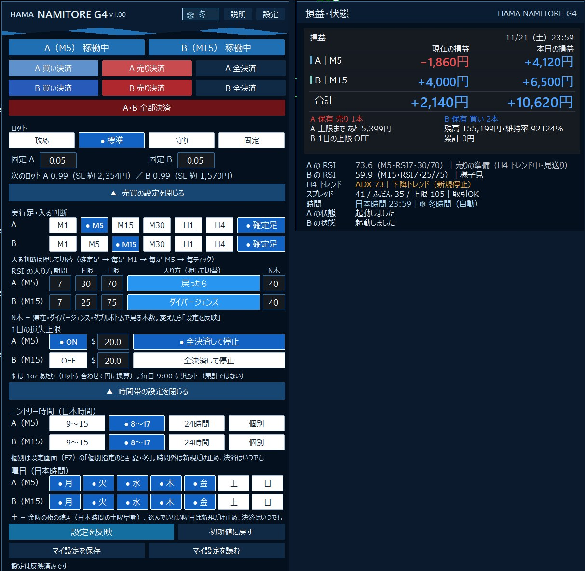

どんな EA？
金（ゴールド）の、行ったり来たりする値動き（レンジ）をねらう EA です。中で 2 つのロジックが同時に動きます。
攻めの A（5 分足）
RSI が「売られすぎ」「買われすぎ」から戻ったところで入ります。
守りの B（15 分足）
値段と RSI の向きがずれる「ダイバージェンス」を待って、確度の高いところだけで入ります。
トレンドが強いときは自動で新しい注文を止めます。決済は、損切り（SL）か反対のサインのときです。利確（TP）を決めることもできます。

特長
- 攻めと守り、性格のちがう 2 つのロジックで、チャンスを逃さず、負けを広げにくい
- 強いトレンドのときは自動で休む（ADX で判断）。重要な経済指標の前後も止められる（初期値 ON）
- 1 日の損失上限と損切りは、パネルで「ドル」か「円」で決められる
- ロットは残高に合わせて自動。攻め／標準／守りに加えて、残高の増え方で切り替わる「自動 攻め」「自動 守り」も選べる
- 成績表ボタンで、A・B 別と合計の成績をいつでも見られる
こんな方に
- トレンドを追うより、上がったら売り・下がったら買いの逆張りで、コツコツ取りたい方
- ほかの EA と組み合わせて、値動きのちがう場面でも稼ぎたい方（トレンド型の EA と相性が良い）
- 細かい設定をしなくても、検証済みの初期値のまま使いたい方
ご注意
- 強いトレンドが長く続く相場は苦手で、負けが続く時期があります（検証でも、残高が一番多いときから約 40% 減った時期がありました）
- ライセンスキーと、WebRequest の許可設定が必要です（デモ口座はデモ用キーで試せます）
- 過去の検証結果は、これからの利益を約束しません。なくなっても困らない資金で使ってください
おすすめの資金とロット
ロットは残高に合わせて自動で決まります。下は「1 オンス分を建てるのに必要な残高」の目安です。
| ロットの決め方 | 1 オンスあたりの残高 | 向いている使い方 |
|---|---|---|
| 攻め | 約 7.8 万円 | 少額から早く増やしたい |
| 標準（初期値） | 約 15.6 万円 | ふつうに使う |
| 守り | 約 23.5 万円 | 落ち込みを小さくしたい |
| 自動 攻め | 少額から育てたいとき。残高が増えると攻め → 標準 → 守りに切り替わる | |
| 自動 守り | まとまった資金のとき。はじめは守り、増えると標準 → 攻めに切り替わる | |
マイクロ口座（1 ロット＝1 オンス）は少額から使えます。スタンダード口座（1 ロット＝100 オンス、最小 0.01 ロット＝1 オンス）も、上の残高があれば本来の量で動きます（100 万円なら標準で約 0.06 ロット）。